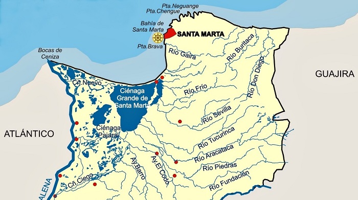
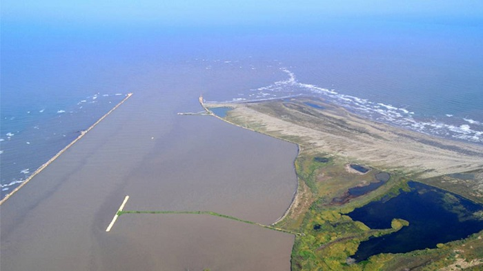
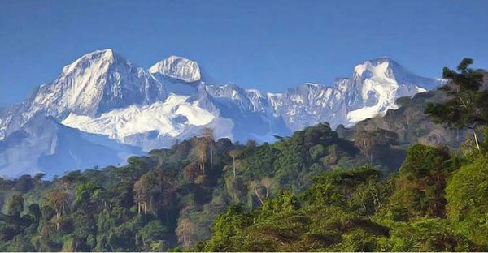
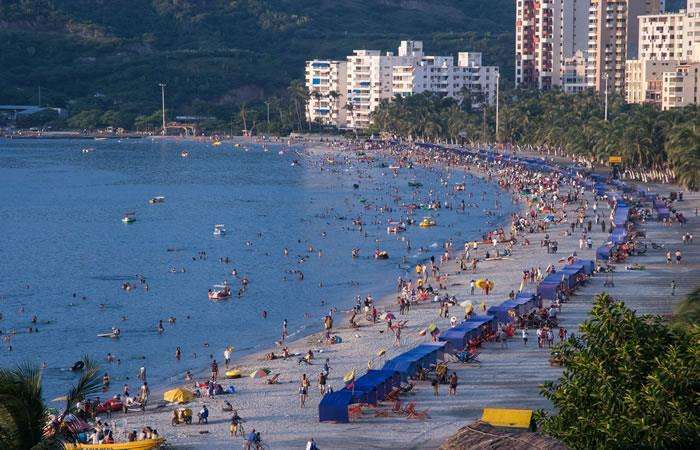

Departamento Magdalena capital Santa Marta Información Parque Nacional Tayrona Quinta de San Pedro Alejandrino Jardín Botánico Catedral Ciudad Perdida
Magdalena es uno de los 32 departamentos de Colombia. Está al norte del país, en la región Caribe Colombiana. El departamento toma el nombre del río que lo baña por su costado occidental, Magdalena.
Ofrece innumerables atractivos turísticos desde el punto de vista natural, cultural y científico. Dentro de sus principales atractivos se resaltan especialmente la franja costera, con sus playas y hermosas bahías; la ciudad de Santa Marta, con sus museos y sitios históricos; los hermosos paisajes de la Sierra Nevada de Santa Marta y del resto del territorio.
 
Sitios Turistico
Sierra Nevada de Santa Marta

¿Donde se ubica la Sierra Nevada
La Sierra Nevada de Santa Marta es un destino turístico mágico en Colombia donde confluyen la sabiduría de la naturaleza y la indígena. Cada paso hacia su interior es un encuentro con una belleza y exuberancia únicas en el mundo. Es la mayor elevación cercana al mar, independiente de la cadena montañosa de los Andes.
Esta ubicada al norte de Colombia sobre la Costa Caribe, a solo 42 km de las playas de Santa Marta donde los turistas se arrullan con el sonido de las olas se encuentran los picos nevados Colón y Bolívar (con 5.775 y 5.560 msnm respectivamente), que hacen de la Sierra Nevada de Santa Marta la montaña costera más alta del mundo. Allí se esconde el parque arqueológico Ciudad Perdida, conocido como Teyuna, corazón de la civilización Tayrona.
La Sierra Nevada de Santa Marta es un destino turístico mágico en Colombia donde confluyen la sabiduría de la naturaleza y la indígena. Cada paso hacia su interior es un encuentro con una belleza y exuberancia únicas en el mundo. Es la mayor elevación cercana al mar, independiente de la cadena montañosa de los Andes.
Santa Marta

Santa Marta es una ciudad ubicada en el mar Caribe, en el departamento de Magdalena en el norte de Colombia. Es un puerto ajetreado que también fue el primer asentamiento español en Colombia. Es la vía de acceso para las excursiones en el Parque nacional natural Tayrona y para los recorridos guiados de varios días por el sitio arqueológico de la Ciudad Perdida (Teyuna) en la Sierra Nevada de las montañas de Santa Marta.
La Sierra Nevada de Santa Marta hace parte del Parque Nacional Natural Sierra Nevada de Santa Marta y del Parque Nacional Natural Tayrona.
Cosas que puedes hacer en Santa Marta
Admirar la biodiversidad del parque nacional Tayrona. ...
Tomar el sol en Playa Blanca. ...
Recorrer Quinta de San Pedro Alejandrino. ...
Pasear en pareja por el parque de los Amantes. ...
Divertirse en el parque acuático El Rodadero.